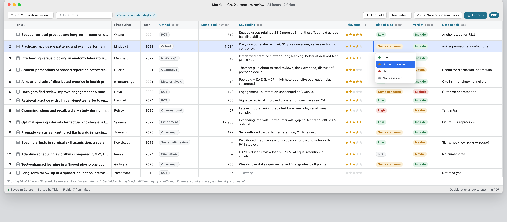
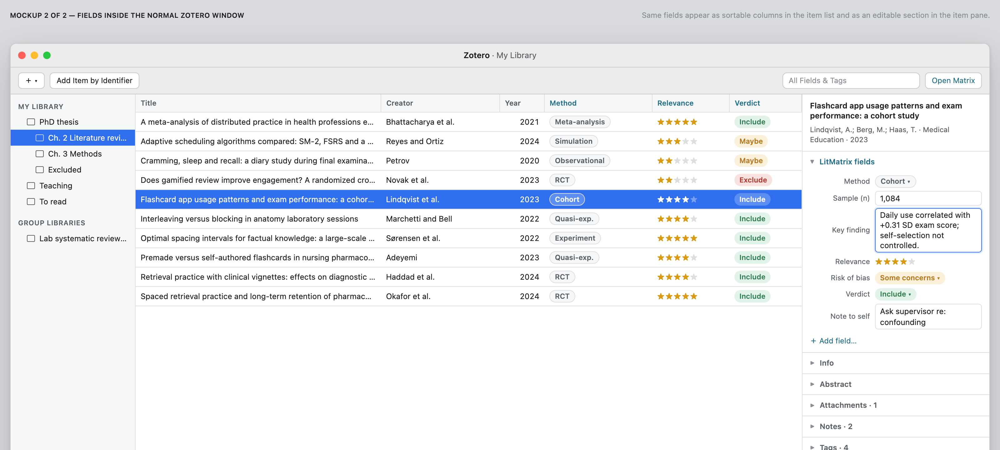

LitMatrix for Zotero
Your literature review as a table, inside Zotero. Custom typed fields, an editable matrix view, export to Excel/Word. Values live in the Extra field, so they sync and stay plain text if you uninstall.
Download beta (.xpi) Interactive mockupInstall: Zotero → Tools → Plugins → gear icon → Install Plugin From File… → choose the .xpi. Zotero 7–10. Beta: please report issues on GitHub.


- Free core: up to 5 fields, matrix view, sort, filter, CSV export.
- Pro (planned, about $25/year or $49 lifetime): unlimited fields, typed and numeric columns, per-column filters, saved views, XLSX/DOCX export, templates.
- Works alongside Better BibTeX. Zotero 7 to 10.
Status: in development. Beta testers welcome; reply on the Zotero forum thread.
Example data in the screenshots is illustrative, not real papers.